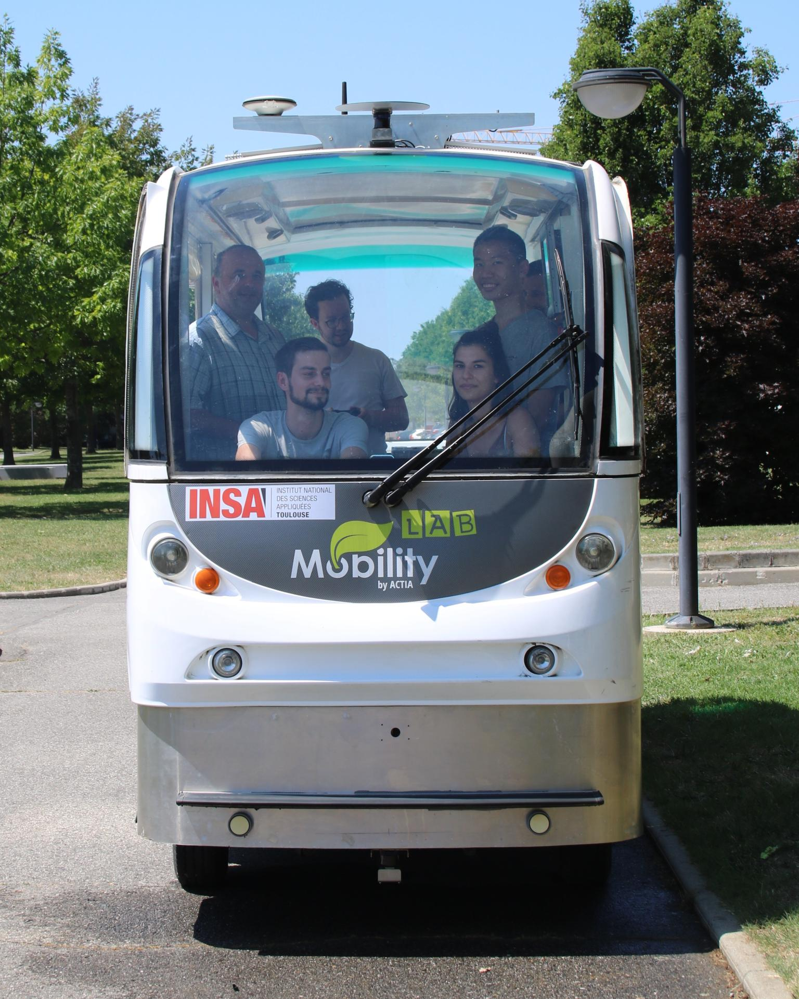
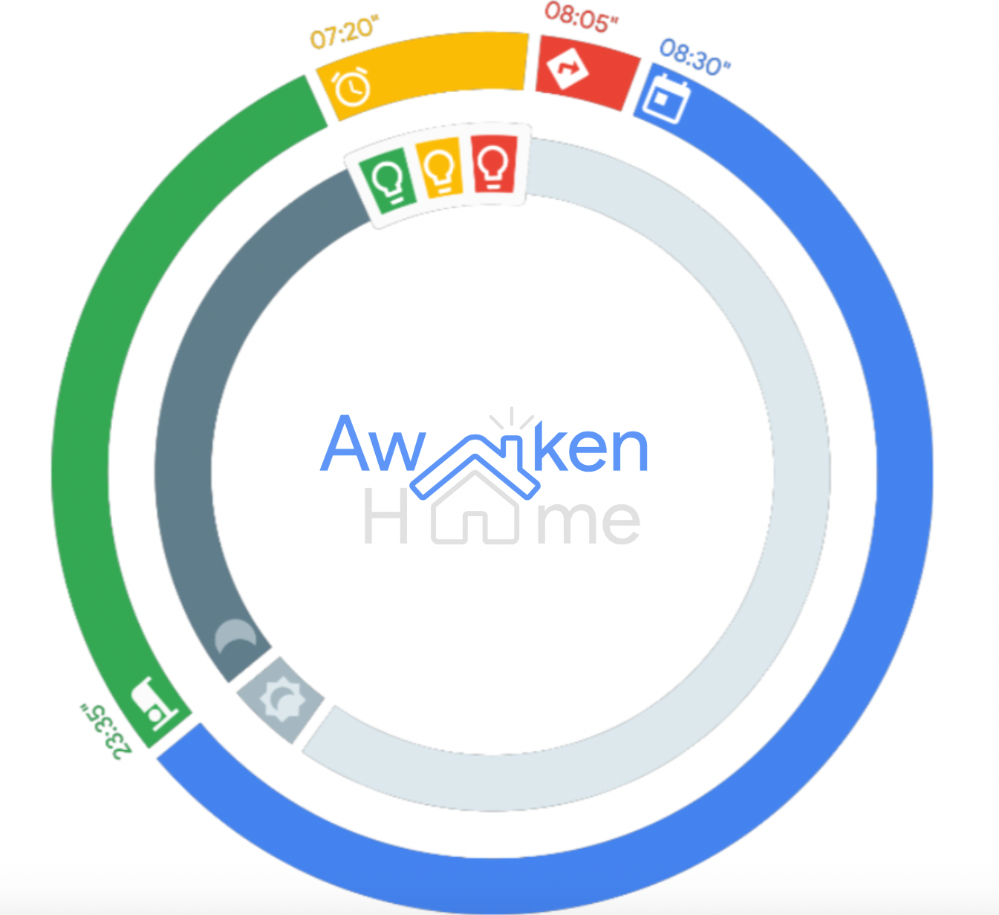
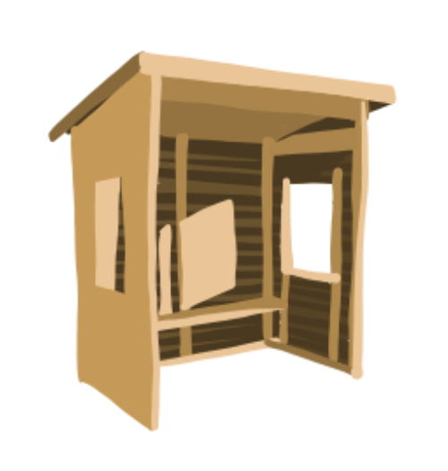
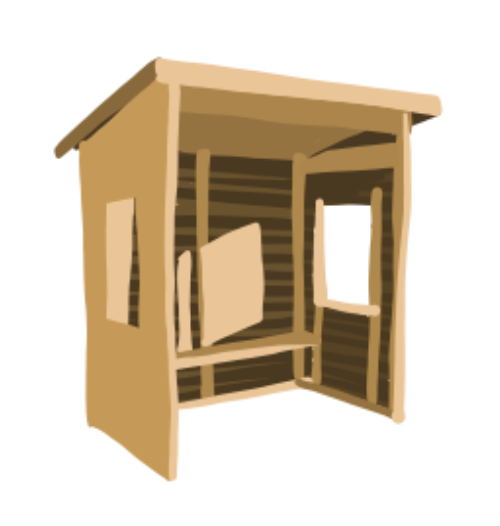

Description
Informations utiles
Dans cette section je présente l'ensemble de mes expériences externes à la formation. Ces expériences sont mentionnées dans ce portfolio car en relation avec le contexte de ma formation et particulièrement avec l'Internet des Objets, domaine auquel je me forme depuis plusieurs années. Pour chacune de ces expériences je mentionnerai le contexte dans lequel j'ai pu réaliser ces expériences et mon rôle dans chacune d'elles. J'expliquerai également le travail que j'y ai effectué. Cette partie est ainsi un complément à ma formation PTP ISS.
Expériences extérieures
Stage ingénieur de quatrième année
Chaire Smart Mobility - INSA Toulouse & ACTIA - Juin à Septembre 2019
Contexte
De juin à septembre 2019 j'ai eu l'opportunité d'effectuer un stage ingénieur dans l'IoT. J'ai effectué ce stage à l'INSA Toulouse dans le cadre de la chaire Smart Mobility en partenariat avec le groupe ACTIA.Problématique
Le sujet de ce stage concernait l'analyse de la mobilité des personnes sur le campus de l'INSA. En effet, dans un contexte de mobilité intelligente il est intéressant de comprendre les déplacements des piétons afin d'aménager au mieux les espaces publics et la voirie.Ma solution
La solution d'analyse de la mobilité que j'ai pu mettre en oeuvre durant ce stage est basée sur le deploiement de caméras sur le campus et sur un traitement vidéo local. Le travail que j'ai effectué peut être synthétisé en quatre grandes parties :1. La détection des personnes
La détection de personnes est réalisée par traitement vidéo en local. J'ai pour cela utilisé une Nvidia Jetson Nano et une raspicam v2. Le traitement a lieu en local dans un soucis de sécurité, ainsi seulement des métadonnées du type "Tant de personnes à tel endroit à tel instant" sont transmises sur internet. L'intérêt de cette solution est d'utiliser une caméra pour couvrir une grande zone. Seulement, cela pose un problème important : détecter les personnes depuis un angle de vue en hauteur (toit d'un bâtiment ou étage élevé). De nombreuses librairies et techniques de deep learning permettent une détection très satisfaisante des piétons à hauteur du sol, mais il a été très difficile de trouver une technique permettant la détection de haut. La solution que j'ai retenue est basée sur un algorithme de reconnaissance utilisant YoloV3 (You Only Look Once v3). Cette solution a pour avantage d'être plus rapide puisque chaque image n'est parcourue qu'une seule fois.2. Le tracking des personnes détectées
Une fois les personnes détectées il m'a fallut les trackées afin d'analyser les déplacements des personnes sur le campus. Les informations tirées de cette analyse seront du type "Durant telle période, tant de personnes sont passées par tel endroit". Ici, j'ai été confrontée à un problème de rapidité. Ne parvenant pas à travailler sur le GPU de la Jetson Nano, le traitement n'était pas réalisé exactement en temps réel, certains trackers perdaient alors la trace de la personne. Pour limiter ce décalage j'ai décidé de ne pas effectuer la reconnaissance à chaque frame mais plutôt toutes les n frames (8 par défaut). Le tracking est alors plutôt satisfaisant. Il serait intéressant d'effectuer une analyse plus détaillée du déplacement d'une personne en particulier.3. L'envoi de métadonnées via la plateforme OM2M
Comme évoqué précédemment, pour un soucis de sécurité il était nécessaire de ne transmettre sur internet que des métadonnées. Ces métadonnées sont tirées du traitement vidéo effectué en local sur la Jeston Nano. Elles sont ensuite envoyées à un server OM2M par des requêtes HTTP POST. Le standard oneM2M permet d'interconnecter différents objets communiquants et donc favorise l'hétérogéniété. Dans ce cadre il sera facile de déployer des caméras en différents points du campus et même d'utiliser d'autres types de capteurs pour une analyse plus riche.4. La création d'une application web simple
Enfin, afin de visualiser les informations reçues depuis les caméras facilement et en temps réel, j'ai développé une application web très simple. Celle-ci représente sur une carte du campus les emplacements des caméras et les données de manière intuitive. La densité de personnes pour une zone est représentée par un code couleur allant du vert au rouge, les flux sont représentés par des flêches bidirectionnelle pour chaque limite d'intérêt (portes de batiment par exemple) dont la couleur varie également avec le nombre de personnes s'étant déplacées dans cette direction.Mon rôle et mon retour d'expérience
Mon rôle au sein de ce stage était donc la réalisation de cette solution de traitement d'images. Mon travail était constitué de la réalisation du traitement à proprement parlé mais également du choix des composants, du déploiement de la plateforme qui pourra ensuite être réutilisée et de la réalisation de documentation pour le suivi de mon travail par un autre étudiant ou stagiaire ensuite.Au cours de ce stage j'ai pu découvrir par une première application concrète certains concepts essentiels de l'Internet des objets. Même si mon travail n'a pas été otpimisé en terme de communication ou de temps de traitement, j'ai pu appréhender ces notions de consommation qui sont très importantes dans le domaine des objets connectés. Pour plus d'informations concernant ce stage vous pouvez consulter le poster qui synthétise ce travaiL. Vous pouvez également visionner la vidéo qui présente plus concretement les différentes étapes de réalisation évoquées.
Projet d'initation à la recherche (PIR)
Vers une maison plus intelligente - Octobre 2018 à Mai 2019
Contexte
Lors de ma quatrième année dans la formation Système Embarqués, j'ai participé à un projet d'intiation à la recherche sur le thème de la Maison Intelligente. Il s'agissait de mon premier projet dans le domaine de l'IoT. Ce projet a été mené avec une équipe de 5 personnes. Dans un premier temps nous avons travaillé sur l'élaboration d'un état de l'art sur les "smart homes". J'ai alors pu travailler sur la communication machine to machine et notamment le standard oneM2M.Problématique
Nous avons ensuite défini plus précisemment l'application que nous souhaitions mettre en oeuvre. Nous avons soulever un problème récurrent : le retard, notamment des étudiants, aux rendez-vous. Nous avons donc décidé de développer une solution permettant d'accompagenr son utilisateur lors de sa préparation matinale à son domicile.Notre solution
Cette solution intègre différents capteurs et objets intelligents. ceux-ci sont positionnés dans la maison de l'utilisateur et leur comportement s'adapte à son Google Calendar. Par exemple, nous avons défini une routine matinale qui permet à l'utilisateur de visualer le temps qu'il lui reste grâce à un changement de couleur de lampes connectées Philips Hue.Mon rôle et mon retour d'expérience
Ce projet constituait une grande part de notre travail personnel au deuxième semestre de 4ème année. Nous nous sommes donc reparti le travail afin de mieux gérer notre temps. J'ai principalement travaillé sur la programmation générale, c'est-à-dire sur l'élaboration du code et son architecture. Mon rôle consistait donc précipalement à définir les scénarios et les programmer une fois les données nécessaires récupérées sur les différentes API ou l'applications utilisateur. Cette expérience a été enrichissante puisque nous étions libres et entièrement autonomes dans la réalisation de notre projet. Il a été intéressant de mener à terme un projet que nous avions imaginer de toutes pièces. Cependant, certaines technologies que nous ne connaissions pas très bien et que nous avons découvert dans la formation ISS auraient simplifié notre travail. Pour découvrir plus en détail la réalisation menée lors de ce projet vous pouvez visualiser notre vidéo de présentation en cliquant sur le bouton ci-dessous.Hackathon 2019
La mobilité connectée - 5 et 6 Décembre 2019
 

Contexte
Les 5 et 6 décembre 2019 j'ai eu l'occasion de prendre part à un hackathon sur le thême de la mobilité connectée. Dans ce cadre, mon équipe était consituée de 3 étudiants INSA issus de la formation Automatique Electronique et 2 étudiants ISDAT de formation artistique. Nous avons réfléchi ensemble au déploiement de solutions techniques qui peuvent améliorer la mobilité comme nous la connaissons actuellement.Problématique
Nous nous sommes naturellement penchés sur le problème de l'isolement des zones périurbaines. Ces zones représentent à nos yeux un réel enjeux social. Nous avons étudié les chiffres relatifs à cette problématique et avons pu en tirer les conclusions suivantes : la ville de Toulouse est la 4ème ville la plus étendue de France. Elle est très attractive au niveau de l'emploi avec des secteurs en croissance permanente tels que l'aéronautique. De plus en plus de jeunes familles viennent alors s'installer dans la périphérie de Toulouse et sont confrontées à ce problème de mobilité.Notre solution
Nous avons donc pensé développer un réseau de navettes connectées qui pourraient relier, à la demande des clients, les zones périurbaines et le centre ville. Notre solution se présenterait sous la forme d'une carte interactive du réseau, qui serait disposée dans les arrêts de bus déjà existants en centre ville, ou déployée dans de nouveaux arrêts en périphérie. Le client pourrait ainsi commander une navette depuis un bouton situé sur la carte et savoir en temps réel dans combien de temps celle-ci peut être disponible. Le trajet des navettes ne seraient pas fixe mais adapté en fonction des demandes. Nous avons pu déployer un premier prototype de cette idée, que nous avons nommée Nav'Access, en utilisant deux cartes Arduino Uno (représentant respectivement un bus et un abris), communiquant via des modules LoRa et la plateforme The Things Network. Nous avons eu l'occasion de présenter cette solution devant un jury constitué d'enseignants et d'industriels partenaires de l'événement.Mon rôle et mon retour d'expérience
Il s'agissait du premier hackathon que mon équipe réalisait, nous n'avons pas clairement défini de rôle à chaque membre. La solution est venue d'une idée commune aux 5 membres. Elle a ensuite muri avec l'aide des encadrants et au fil de la réalisation. Les étudiantes de formation ISDAT se sont principalement concentrées sur la réalisation de croquis de scénarios et sur une maquette de la carte interactive. Du coté des étudiants INSA, nous avons travaillé ensemble sur les différents points techniques de notre solution. Cette expérience a été très enrichissante nous permettant de découvrir un mode de travail différent de ce que nous avons l'habitude de pratiquer. Nous avons pu nous consacrer à la réalisation de cette solution dans son intégralité : de l'idée jusqu'à la conception. Découvrir les idées innovantes d'autres équipes sur le même thème a également été un aspect très intéressant de cet événement.